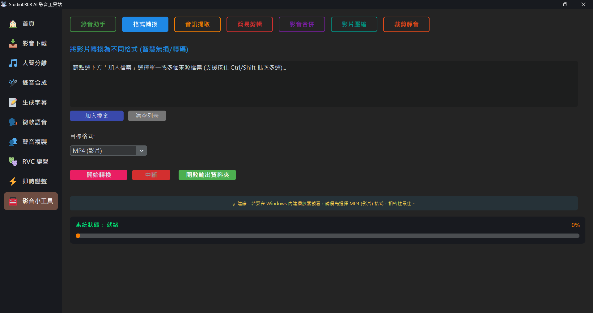

格式轉換 (Format Converter) 允許您在不同多媒體格式之間建立通用性變換。其底層運用高效能工具列來轉碼，保證無損或最高品質的壓縮轉換。
💡 批次處理支援：您可以在選擇檔案時框選或按住 Ctrl / Shift 來一次加入多個檔案，系統將會啟動自動排隊處理。
💡 提示：轉換完成的檔案，將會自動輸出至 Outputs/Tools 資料夾內，您可以隨時點選「開啟輸出資料夾」檢視結果。
A: 畫面壓縮與重新編碼需要極大的 CPU 及 GPU(若支援) 運算資源，若是 4K 等級之高畫質影片將需要等比例之轉換時間。
A: 本程式內建強大的「智慧偵測轉換 (Smart Fallback)」機制，會自動為您把關：
A: 目前的轉換為了確保高一致性的應用支援，多以提取第一軌主聲音並進行泛用編碼為主。如果您需要對特殊規格 MKV 進行抽出，可能需搭配其他進階工具。